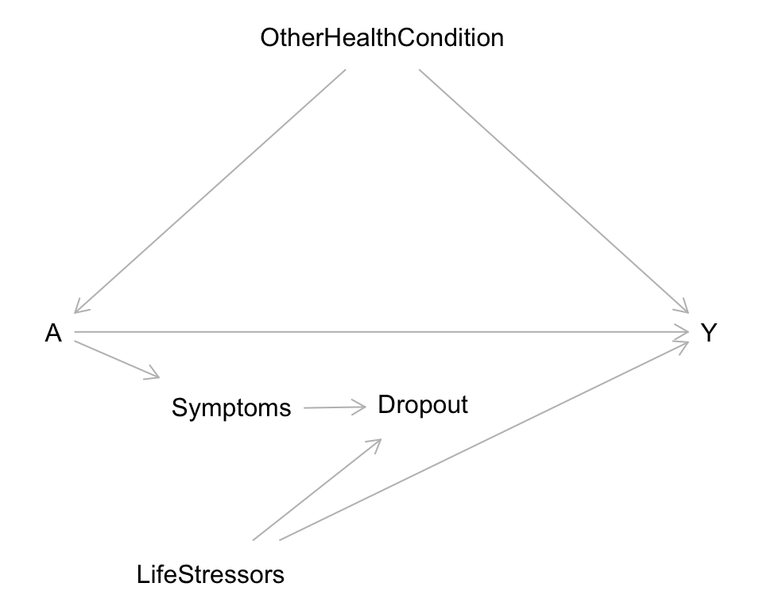

Assignment 3
Due: Tuesday, 9/29 at midnight on Moodle
Format: Please submit a rendered HTML document containing your responses. You can work from this template.
Exercises
Exercise 1
We are studying the causal impact of a medical treatment on a health outcome. The causal graph below represents the situation.
The variables are as follows:
Y: quantitative health score (higher values indicate better health outcomes)A: binary treatment variable indicating whether or not someone received a particular medical treatment (1 = received, 0 = did not receive)Symptoms: binary variable indicating whether or not someone experienced considerable adverse symptoms (1 = yes, 0 = no)Dropout: binary variable indicating whether or not someone dropped out of the study (1 = dropped out, 0 = stayed in)LifeStressors: binary variable indicating whether or not someone is experiencing considerable adverse life stressors (1 = yes, 0 = no)OtherHealthCondition: binary variable indicating whether or not someone has an adverse health condition (1 = has condition, 0 = does not have condition)
- Simulate a single dataset of size 10,000 from the causal graph. Your data should have the following properties:
Y: Use the following equation for the mean ofY:Y = 60 + 20*A - 20*OtherHealthCondition - 10*A*OtherHealthCondition - 30*LifeStressors. When you createY, make sure to create it with separate mean and noise terms like we did in class. (This will be needed for part b.)A: Those without an adverse health condition have a 20% chance of receiving treatment, and those who do have a 40% chance.Symptoms: Those who don’t receive treatment have a 2% chance of experiencing considerable adverse symptoms, and those who do have a 22% chance.Dropout: Those without considerable adverse symptoms or life stressors have a 2% chance of dropping out. Having adverse symptoms increases the chance of dropout (additively) by 50% regardless of life stressors. Having adverse life stressors increases the chance of dropout (additively) by 40% regardless of symptoms.LifeStressors: There is a 30% chance that someone is experiencing adverse life stressors.OtherHealthCondition: There is a 20% chance that someone has an adverse health condition.- On your own (but don’t include in your submitted assignment), check your simulated variables with plots and/or models.
sim_data <- tibble(
# Your code here
)- Now let’s add to
sim_datatwo variables representing the treated and control potential outcomes. Add these variables to yourtibble()code from part a. (I assume that the noise term you created forYis callednoise_Y.)- Create a variable called
Ya1(representing \(Y^{a=1}\)) that is generated byYa1 = 60 + 20*1 - 20*OtherHealthCondition - 10*1*OtherHealthCondition - 30*LifeStressors + noise_Y. - Create a variable called
Ya0(representing \(Y^{a=0}\)) in an analogous way. - Convince yourself that by creating these variables you have given treatment to everyone (
Ya1) and withheld treatment for everyone (Ya0). (You don’t need to write anything here, but if you have questions about this, please ask!)
- Create a variable called
- Compute individual-level causal effects as the difference between the two potential outcomes. Call this new variable
indiv_effectand add it to thetibble()code from part a. Then run the code below to compute the average causal effect among non-dropouts as the mean of the individual effects (code is already complete). We will refer to this true effect in later parts.
sim_data |>
filter(Dropout==0) |>
summarize(mean(indiv_effect))- Use d-separation rules to identify the variables needed to block noncausal paths (and thus needed in an analysis to estimate the causal effect of treatment).
- The
Dropoutvariable is conditioned onDropout=0. (Because in a real analysis, we only have complete data on non-dropouts.) - Assume that
LifeStressorsis an unmeasured variable. - Show your work by listing the noncausal paths and explaining how to block them.
- The
- Let’s compare the treatment effects estimated from different models.
- Paste the code used to create
sim_datafrom part a into the chunk below where it says# *** Paste your simulation code here ***. - Read through the code below to get an overall sense of what is happening. If you have questions, please ask!
- Run the entire code chunk to obtain a dataset called
sim_resultswhich contains the results of our entire simulation: data simulation and model fitting. - Take a look at the structure of
sim_resultsby enteringView(sim_results)in the Console. - Make an appropriate plot of the simulation results.
- Paste the code used to create
# This function computes the estimated average causal effect (ACE)
# from a model (mod) and dataset (data) by using the model to predict
# the outcome when everyone in the dataset receives treatment and
# when everyone in the dataset does not receive treatment
compute_ace <- function(mod, data) {
# Create a dataset where everyone is treated:
data_A1 <- data |> mutate(A = 1)
# Create a dataset where everyone is untreated:
data_A0 <- data |> mutate(A = 0)
# Compute outcome predictions for both datasets
# The average difference is the ACE
mean(predict(mod, newdata = data_A1) - predict(mod, newdata = data_A0))
}
set.seed(451)
# The purrr::map(1:100) part loops a set of code 100 times.
# That is, we are repeating our simulation 100 times.
sim_results <- purrr::map(1:100, function(i) {
n <- 10000
sim_data <- tibble(
# *** Paste your simulation code here ***
)
# Filter dataset to non-dropouts ("obs" stands for observed)
sim_data_obs <- sim_data |>
filter(Dropout==0)
# Fit various models to estimate the causal effect
mod1 <- lm(Y ~ A, data = sim_data_obs)
mod2 <- lm(Y ~ A * OtherHealthCondition, data = sim_data_obs)
mod2v2 <- lm(Y ~ A + OtherHealthCondition, data = sim_data_obs)
mod3 <- lm(Y ~ A + Symptoms, data = sim_data_obs)
mod4 <- lm(Y ~ A * OtherHealthCondition + Symptoms, data = sim_data_obs)
mod4v2 <- lm(Y ~ A + OtherHealthCondition + Symptoms, data = sim_data_obs)
# Collect results: true ACE and several estimated ACEs from different models
c(
truth = mean(sim_data_obs$indiv_effect),
naive = compute_ace(mod1, sim_data_obs),
partial_adj1 = compute_ace(mod2, sim_data_obs),
partial_adj1_no_interaction = compute_ace(mod2v2, sim_data_obs),
partial_adj2 = compute_ace(mod3, sim_data_obs),
full_adj = compute_ace(mod4, sim_data_obs),
full_adj_no_interaction = compute_ace(mod4v2, sim_data_obs)
)
}) |> bind_rows()
sim_results <- sim_results |>
pivot_longer(cols = everything(), names_to = "model", values_to = "estimate")ggplot(sim_results, ???) +
???- Summarize the results from your plot in part e: what do you notice about how the average causal effect (ACE) estimate from the naive, partially adjusted, and fully adjusted models compare to the truth? (Also reference the true ACE you computed from a single simulated dataset in part c.) And how do the estimate from models with and without interaction terms compare? Why do you think we observe these results?